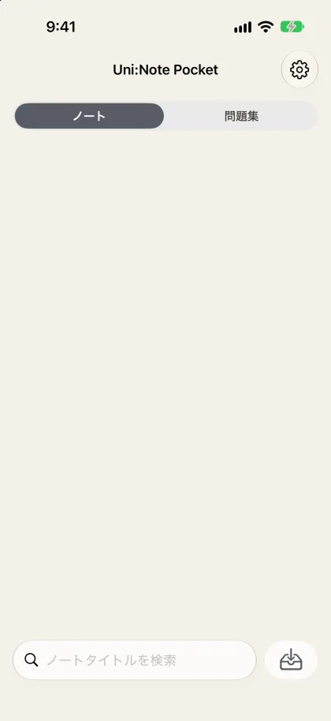
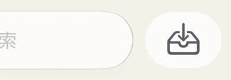
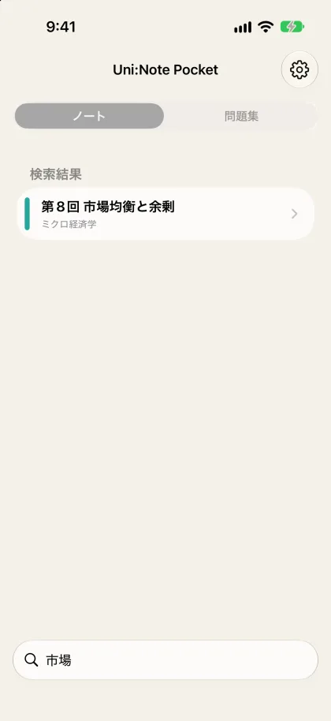
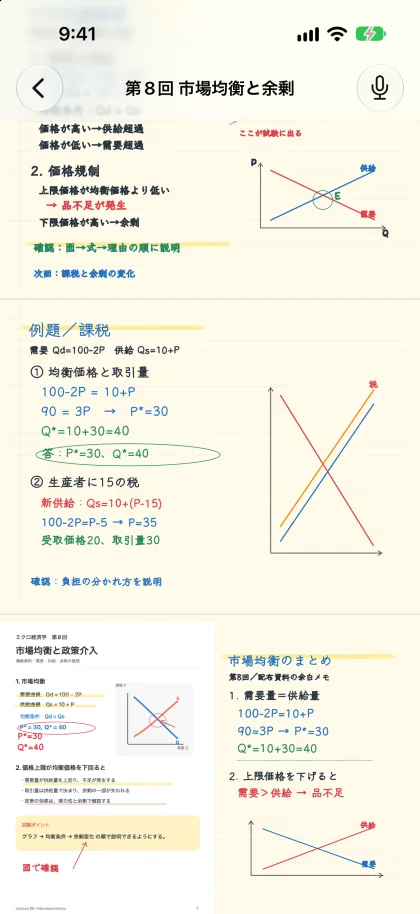
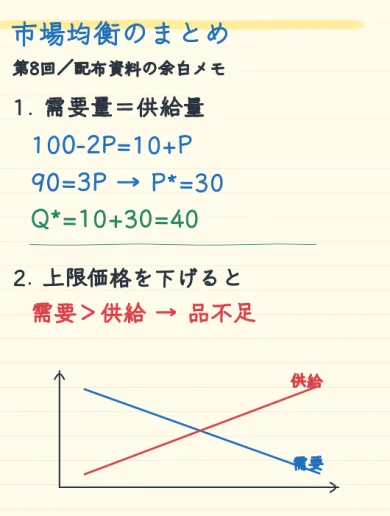

バックアップを取り込むだけ
Uni:Noteで書き出したバックアップを、Pocketに取り込む。それだけでノートと問題集がiPhoneに並ぶ。


ページを縦に読み進める・拡大
ノートのページを縦にスクロールして読む。細かい字は拡大して確かめる。


ノート名で探す
ノートの名前で検索して、読みたいノートをすぐ開く。

問題集で覚える
覚えた・覚えていないの振り分け、途中再開、ランダム出題。手書きの問題も表示される。


出典のノートページを開く
問題の出典から、元のノートページを開いて確かめる。

